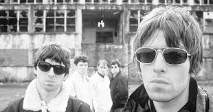

El viernes 28 de agosto de 2009, tras una pelea entre bastidores de los hermanos Noel y Liam Gallagher,7071 se anula su presentación en el festival de rock en Seine en las afueras de París minutos antes de que fuese a dar comienzo su actuación. La organización del evento informó a los asistentes de la cancelación del concierto aportando una cita de Noel diciendo que el grupo «ya no existe», poniendo fin así a la gira europea de la banda.[cita requerida] Noel confirmó la separación a través de un comunicado hecho en la página oficial de la banda en el que expresaba su tristeza por dejar Oasis y explicaba que no podía seguir trabajando con su hermano.72 Más adelante Liam Gallagher declaró en una entrevista con The Times que «ya no hay más Oasis». Sin embargo, en diciembre de 2009, Liam dijo que continuaría grabando con Gem Archer, Andy Bell (ahora en guitarra), Chris Sharrock, el tecladista Jay Darlington y Jeff Wootton como nuevo bajista.73 Días después Liam confirmó que la banda tiene ocho canciones completas74 El 1 de febrero de 2010 Noel Gallagher anunció su primer show como solista el cual se llevó a cabo en el Royal Albert Hall de Londres el 25 y 26 de marzo como parte de los shows del Teenage Cancer Trust que van desde el 20 al 30 de marzo, shows que contaron con las participaciones de Depeche Mode, Them Crooked Vultures, Suede, Arctic Monkeys, The Who y otros artistas.75 El 16 de febrero de 2010, (What's The Story) Morning Glory? ganó el premio al "mejor disco de los últimos 30 años".76 Liam recogió el premio solo y luego presentó su discurso. En el discurso Liam dio gracias a Paul "Bonehead" Arthurs, Paul "Guigsy" McGuigan y Alan White, pero no a su hermano Noel.77 Acto seguido, Liam lanzó el micrófono y el premio al público.78 En marzo de 2010 la banda anunció que estará editando Time Flies… 1994–2009, un disco que compilaría los sencillos que fueron lanzados en el Reino Unido durante los 15 años de carrera de la banda. Este material salió a la luz el 14 de junio del mismo año.79En diversas entrevista dadas por Noel y Liam se dejó entrever una posibilidad de que Oasis volviera a juntarse en 2015 para celebrar los 20 años de (What's the Story) Morning Glory?, pero Noel se apresuró a desmentir esta versión alegando que había sido mal interpretado por los periodistas y admitió que él se separó de Oasis por una razón y esa razón sigue en pie. Por otro lado Liam es el que más esperanza da a los fanes ya que en varias entrevistas había dejado claro que estaba conforme con su banda Beady Eye, pero que la época en la que fue el Frontman de Oasis fue la mejor, y que Oasis era su vida. Según algunas fuentes cercanas a Noel Gallagher, afirman que el grupo estaría planeando un triunfal y sorpresivo regreso para el festival NHS, acompañado de un hipotético nuevo álbum bajo la producción de Paul McCartney y Stevie Wonder (Siendo el debut de ambos como productores para otros artistas) El 29 de abril de 2020, Noel anunció a través de las páginas de redes sociales de la banda que se había encontrado una nueva grabación de demo, "Don't Stop...", y que se lanzaría a la medianoche del día siguiente. Esta pista, anteriormente conocida solo de una grabación durante una prueba de sonido en Hong-Kong, fue redescubierta durante la pandemia de COVID-19, y sería la primera pista que se lanzaría en la banda en más de 10 años.80 En julio de 2021, en celebración del 25 aniversario de los dos conciertos récord de Oasis en Knebworth Park en agosto de 1996, una nueva película documental de conciertos, que combina nuevas entrevistas, material de archivo inédito y material de concierto en vivo de ambas noches, titulado Oasis Knebworth 1996, se estrenó en los cines el 23 de septiembre de 2021. El estreno de la película marca la primera vez que se publican imágenes de conciertos de los dos conciertos.81 El documental fue lanzado en los medios domésticos el 19 de noviembre de 2021, junto con un álbum doble en vivo del mismo nombre, que contiene 20 canciones de ambas noches.
